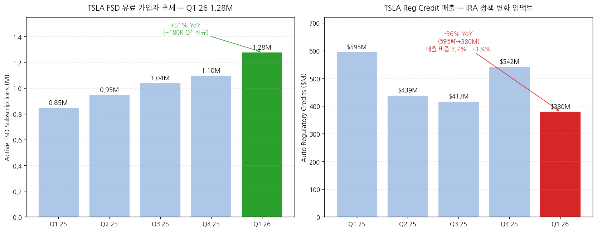
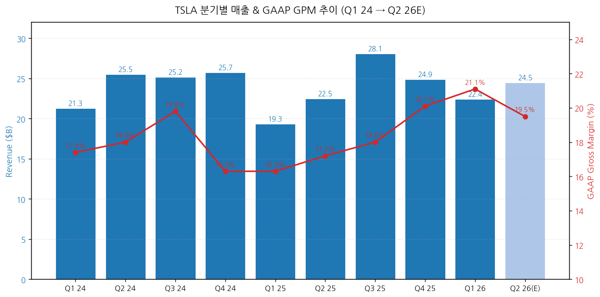
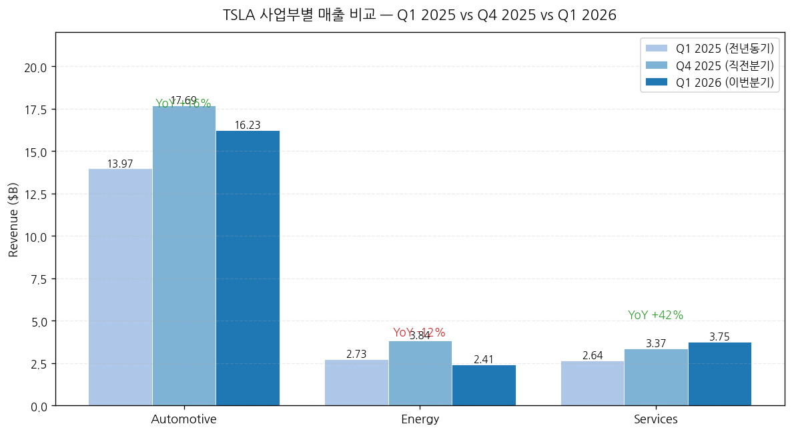
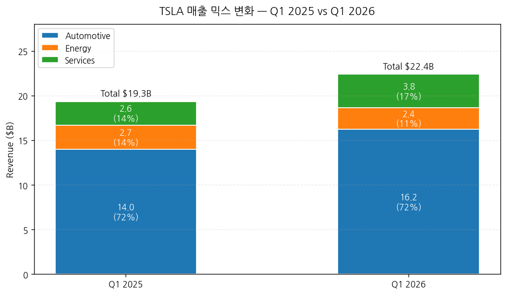
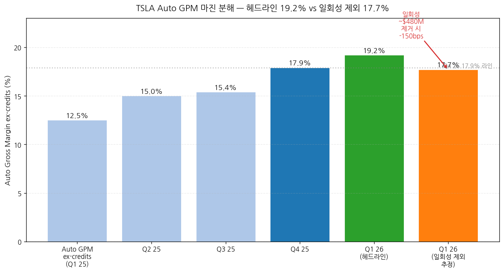
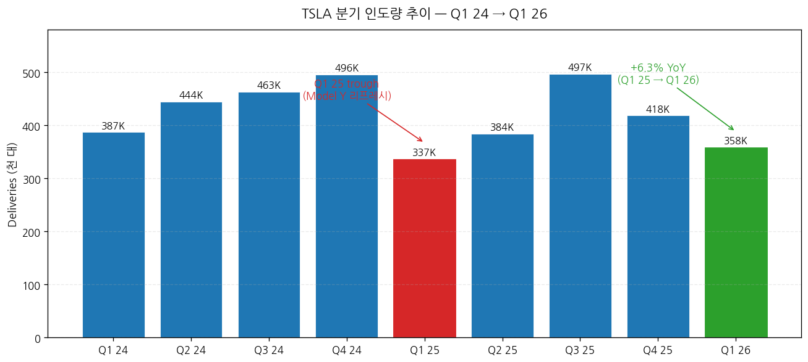
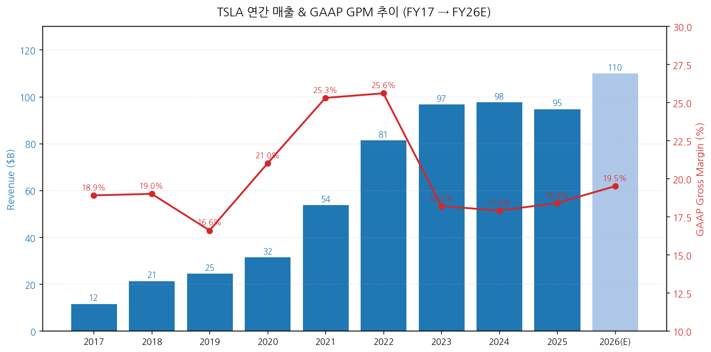
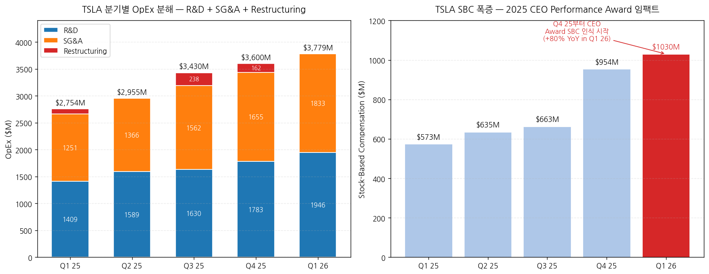

모드: 실적 리뷰
종목: Tesla (TSLA)
섹터: 미국 빅테크
분기: 2026-Q1
발표일: 2026-04-22 (수, 미국 동부시간 AMC, 컨퍼런스콜 ET 17:30 / 4:30 PM CT)
작성 시각: 2026-05-03 16:00 KST (v2 — IR 원본 기반 전면 재작성)
안내: v1(2026-05-03 14:30, 2차 소스 기반)에서 발견된 다수 오류를 IR 원본 3종(Shareholder Deck Q1 2026 Update PDF · 10-Q · Earnings Call Transcript)으로 검증·교정한 v2입니다. 표준 위치(
earnings-preview/) 프리뷰 미존재 → 항목 4-1·7-1 자동 생략. v1 대비 주요 교정 사항은 항목 0 (v1 → v2 교정 요약)에 정리.
→ 이번 분기 마진의 진짜 동인은 사이클 회복이 아니라 일회성 +$480M — Auto GPM ex-credits 19.2% (+670bps YoY)는 헤드라인이지만, CFO Taneja 직접 시인: "warranty write-downs 약 $230M + tariff 환급 $250M+ 일회성 이익". Energy GPM 39.5%+ 사상 최고도 tariff 환급에서 나온 것. 정상화 시 Auto 마진은 17~18% 권역 추정.
→ Regulatory credit 매출은 OFFENSE가 아닌 DEFENSE — Q1 26 reg credit = $380M (vs Q1 25 $595M, -36% YoY) ← v1의 가장 큰 오류 정정. 자동차 매출 비중 1.9% (Q1 25 3.7% 대비 반토막). 트럼프 행정부 EV 크레딧 정책 변화로 구조적 감소 중. 마진 회복은 reg credit 감소를 뚫고 만든 것 — 펀더멘털 측면에서는 오히려 더 강력한 시그널이지만, 일회성 $480M을 빼면 평범.
→ CapEx $25B+ 가이던스 충격이 정확히 무엇인지 — CFO 직접 발언: "current expectation for 2026 is over $25 billion of CapEx" + "negative free cash flow for the rest of the year". 6개 공장 동시 운영 + Terafab 연구팹 $3B 단독 + Optimus 라인 + AI 인프라. Q1 26 단독 CapEx $2.49B가 분기 평균 $6B+로 가속될 전망 (잔여 3개 분기 -$13~16B FCF 임팩트 추정).
→ OpEx +37% YoY 폭증의 진짜 원인은 SBC — Q1 26 OpEx $3,779M (v1이 -2% QoQ로 잘못 추정한 것을 +5.0% QoQ로 정정). SBC만 Q1 25 $573M → Q1 26 $1,030M (+80% YoY). 2025 CEO Performance Award의 한 마일스톤이 "deemed probable"로 분류되며 분기 SBC가 폭증. R&D +9% QoQ (AI5 칩, Cybercab/Semi/Optimus), SG&A +11% QoQ도 동시 증가.
→ 펀더멘털 시그널은 양면 — (+) Berlin 분기 사상 최대 61K, EMEA QoQ 인도 +150%(France/Germany), Q1 인도 358K 미스에도 "highest Q1 order backlog in over 2 years" (CFO 언급), FSD 유료 가입자 1.28M (+51% YoY, +180K 신규). (-) DOI 27일 (v1 추정 22일보다 더 나쁨), 5만대 재고 빌드, ESS 8.8 GWh -38% QoQ, HW3 무료 retrofit으로 워런티 부담 잠재. 마진 회복 입증 + 볼륨 미스 + 일회성 영향 + AI 내러티브 양면의 분기.
| # | 항목 | v1 (오류) | v2 (IR 원본) | 임팩트 |
|---|---|---|---|---|
| 1 | Reg credit Q1 26 | $595M (일회성 boost) | $380M (-36% YoY) | 매출 비중 2.7% → 1.9%로 정정. 마진 회복 해석 강화 |
| 2 | OpEx QoQ 변화 | -2% QoQ (통제) | +5.0% QoQ (폭증) | OpEx 통제 서사 무효. SBC 주범 |
| 3 | SBC | 미언급 | $1,030M, +80% YoY | 2025 CEO Performance Award |
| 4 | Auto warranty 일회성 | 미언급 | $230M write-down 회수 | CFO 직접 시인 |
| 5 | Energy tariff 일회성 | 미언급 | $250M+ tariff 환급 | Energy GPM 39.5% 사상 최고의 진짜 원인 |
| 6 | Energy GPM | "비공개 (회사 정책)" | 39.5%+ 사상 최고 | CFO 직접 공개 |
| 7 | Services GPM | "+5~7% 추정" | 9.2% (vs Q4 8.8%) | CFO 직접 수치 |
| 8 | DOI | 22일 (추정) | 27일 (IR 공식) | 재고 부담 더 심각 |
| 9 | FSD 유료 가입자 | 미언급 | 1.28M (+51% YoY, +180K Q1 신규) | Pierre 분석가 "winning twice more FSD users than selling cars" |
| 10 | FX 영향 | 미언급 | +$0.9B 매출 / +$0.2B 영업이익 | 환율 tailwind 명시 필요 |
| 11 | Q3 25 OPM | 7.3% | 5.8% (IR) | 비교 분기 데이터 정정 |
| 12 | Q4 25 OPM | 9.8% | 5.7% (IR) | 비교 분기 데이터 정정 |
| 13 | Q3 25 Non-GAAP EPS | $0.62 | $0.50 (IR) | 비교 분기 데이터 정정 |
| 14 | CapEx | "Q3-Q4 추가 상향 가능" | $3B Terafab 연구팹 단독, Intel 14A 공정 | Musk 공개 |
| 15 | SpaceX equity 투자 | 미언급 | $2.0B 분기 내 집행 | 현금 -$2.0B |
| 16 | Berlin 생산 | 미언급 | 61K 분기 사상 최대 (1Q26) | EMEA 회복 시그널 |
| 17 | EMEA QoQ 성장 | 미언급 | France/Germany +150% QoQ | 지역 회복 |
| 18 | HW3 retrofit 비용 추정 | "$300~600M 잠재" | "micro factories 설치 필요" | 운영 임팩트 더 큼 |
| 19 | AI4.1/AI4+ | 미언급 | 64GB RAM, 2027 mid 양산 | 차세대 로드맵 |
| 20 | AI5 chip | "TSMC 메인" | Intel 14A + SpaceX Terafab 협업 | 공급망 전략 변경 |
| 21 | Energy storage YoY | -12% YoY | -15% YoY (IR) | 더 큰 감소 |
| 22 | Storage Q4 25 정점 | "약 14 GWh" | 14.2 GWh (IR) | 정확한 수치 |
① 분기 실적 — 5분기 IR 공식 + Q2 26 컨센
(1) 손익 핵심 지표 (단위: $M, EPS는 $)
| 항목 | Q1 2025 | Q2 2025 | Q3 2025 | Q4 2025 | Q1 2026 | YoY% | Q2 26(E) |
|---|---|---|---|---|---|---|---|
| Total revenues | 19,335 | 22,496 | 28,095 | 24,901 | 22,387 | +16% | 약 24,500 |
| Automotive sales | 12,925 | 15,787 | 20,359 | 16,750 | 15,473 | +20% | n/a |
| Auto regulatory credits | 595 | 439 | 417 | 542 | 380 | -36% | n/a |
| Auto leasing | 447 | 435 | 429 | 401 | 381 | -15% | n/a |
| Total auto | 13,967 | 16,661 | 21,205 | 17,693 | 16,234 | +16% | n/a |
| Energy | 2,730 | 2,789 | 3,415 | 3,837 | 2,408 | -12% | n/a |
| Services & other | 2,638 | 3,046 | 3,475 | 3,371 | 3,745 | +42% | n/a |
| Total gross profit | 3,153 | 3,878 | 5,054 | 5,009 | 4,720 | +50% | n/a |
| GAAP GPM (%) | 16.3 | 17.2 | 18.0 | 20.1 | 21.1 | +478bp | 약 19.0 |
| Operating expenses | 2,754 | 2,955 | 3,430 | 3,600 | 3,779 | +37% | 약 3,800 |
| R&D | 1,409 | 1,589 | 1,630 | 1,783 | 1,946 | +38% | n/a |
| SG&A | 1,251 | 1,366 | 1,562 | 1,655 | 1,833 | +47% | n/a |
| Restructuring | 94 | 0 | 238 | 162 | 0 | n/a | n/a |
| Operating income | 399 | 923 | 1,624 | 1,409 | 941 | +136% | 약 1,200 |
| Operating margin (%) | 2.1 | 4.1 | 5.8 | 5.7 | 4.2 | +214bp | 약 4.9 |
| Adjusted EBITDA | 2,814 | 3,401 | 4,227 | 4,154 | 3,668 | +30% | n/a |
| Adj EBITDA margin (%) | 14.6 | 15.1 | 15.0 | 16.7 | 16.4 | +183bp | n/a |
| Net income (GAAP) | 409 | 1,172 | 1,373 | 840 | 477 | +17% | n/a |
| Net income (non-GAAP) | 934 | 1,393 | 1,770 | 1,761 | 1,453 | +56% | n/a |
| Stock-based comp | 573 | 635 | 663 | 954 | 1,030 | +80% | n/a |
| Diluted EPS GAAP ($) | 0.12 | 0.33 | 0.39 | 0.24 | 0.13 | +8% | n/a |
| Diluted EPS non-GAAP ($) | 0.27 | 0.40 | 0.50 | 0.50 | 0.41 | +52% | 약 0.50 |
| OCF | 2,156 | 2,540 | 6,238 | 3,813 | 3,937 | +83% | n/a |
| CapEx | (1,492) | (2,394) | (2,248) | (2,393) | (2,493) | +67% | 약 (5,000) |
| FCF | 664 | 146 | 3,990 | 1,420 | 1,444 | +117% | 음수 전환 예정 |
→ (출처: Tesla Q1 2026 Update PDF, 4-5쪽 Financial Summary) 모든 수치 IR 공식 표 그대로 인용.
→ 사실(Fact): GAAP GPM 21.1%는 5분기 연속 우상향 + 사이클 사상 최고. 그러나 일회성 4.8억 달러 (warranty $230M + Energy tariff $250M+) 제외 시 GAAP GPM은 약 18.9% 추정 — Q4 25(20.1%)보다 오히려 낮은 수준.
→ Reg credit 1.9%는 Q1 25(3.7%)의 절반 — 자동차 매출 비중에서 한 해 만에 -180bps 감소. v1이 reg credit Q1 26을 $595M으로 잘못 인용 → 실제는 $380M으로 YoY $215M 감소(headwind). 그럼에도 Auto GPM이 +670bps 점프한 것은 단가·믹스·비용 효율의 진짜 개선으로 해석 가능.
(2) 다음 분기 컨센 변동 (IR 발표 후 ~5월 초)
→ Q2 26 매출 컨센 약 $24.5B (인도 +6% YoY 가정 + Q2 잔여 일회성 부재 반영)
→ Q2 26 EPS 컨센 약 $0.50 (마진 17~18% 정상화 + reg credit $400M 가정)
→ FY26 매출 컨센 $108~110B (재고 회복 + Cybercab/Semi 양산 시작 가정)
→ FY26 EPS 컨센 $2.30~2.50 (Q1 일회성 제외 베이스라인)
② 사업부별(BU별) 매출·마진 — IR 원본 기반
(1) Q1 26 BU 손익 비교 (단위: $M)
| BU | Revenue | COGS | Gross Profit | GPM (%) | YoY 매출 | QoQ 매출 |
|---|---|---|---|---|---|---|
| Automotive total | 16,234 | 12,812 | 3,422 | 21.1 | +16% | -8% |
| Auto sales (vehicles) | 15,473 | 12,616 | 2,857 | 18.5 | +20% | -8% |
| Auto leasing | 381 | 196 | 185 | 48.6 | -15% | -5% |
| Auto regulatory credits | 380 | — | 380 | 100 | -36% | -30% |
| Auto GPM ex-credits | — | — | — | 19.2% | (Q1 25 12.5% 대비 +670bp) | (Q4 25 17.9% 대비 +130bp) |
| Energy generation/storage | 2,408 | 1,456 | 952 | 39.5 | -12% | -37% |
| Services & other | 3,745 | 3,399 | 346 | 9.2 | +42% | +11% |
→ (출처: Tesla Q1 26 Shareholder Deck p.25 Statement of Operations)
→ Energy GPM 39.5% — 분기 사상 최고 갱신 (이전 Q3 25 약 31% 추정). CFO Taneja 발언 verbatim: "We set yet another record with gross margins in this business over 39.5% due to some one-time benefits from certain tariff recognitions of more than $250 million from certain tariffs which we had paid in prior quarters". → 정상화 시 28~30% 권역으로 회귀 예상 — CFO도 "continue to expect energy compression from here with increasing competition and tariff impacts" 직접 가이드.
→ Services GPM 9.2%: 직전분기 8.8% → 9.2%로 +40bps QoQ 개선. CFO 인용: "Services and others improved sequentially from 8.8% to 9.2%". Insurance·Supercharging·Robotaxi 인프라 투자 흡수에도 마진 우상향 — 사상 최고 BU 매출 비중(16.7%)과 결합되어 Services BU의 흑자 안정화 진입 시그널.
→ Auto GPM ex-credits 19.2% 분해 (CFO 코멘트 + IR 노트 종합):
→ ① warranty write-downs 약 $230M 일회성 회수 (단일 quarter 임팩트 약 +145bps → 정상화 후 17.7% 추정)
→ ② tariff 일부 환급 (수치 미공개)
→ ③ FSD 매출 인식 가속 — 1.28M 가입자 × ARR 가정 $0.5~1B
→ ④ FX +$0.2B 영업이익 영향 (constant currency 기준 적용)
→ ⑤ "lower average cost per vehicle due to lower material costs"
→ ⑥ AI/CEO award SBC + R&D 증가가 OpEx로 부담 (마진은 늘었지만 OPM은 4.2%로 Q4 5.7% 대비 -150bps QoQ 후퇴)
(2) BU 매출 비중 변화
| BU | Q1 2025 비중 | Q1 2026 비중 | 변화 |
|---|---|---|---|
| Automotive | 72.2% | 72.5% | +30bps |
| Energy | 14.1% | 10.8% | -330bps |
| Services | 13.6% | 16.7% | +310bps (사상 최고) |
→ Energy 비중 -330bps는 8.8 GWh 일시 감소 효과 (CFO: "the energy storage business is inherently lumpy").
→ Services 비중 +310bps는 sustained trend.
③ 운영 지표 (Operational Summary) — IR 공식
(1) 인도·생산 디테일
| 항목 | Q1 25 | Q4 25 | Q1 26 | YoY |
|---|---|---|---|---|
| Model 3/Y production | 345,454 | 422,652 | 394,611 | +14% |
| Other models production | 17,161 | 11,706 | 13,775 | -20% |
| Total production | 362,615 | 434,358 | 408,386 | +13% |
| Model 3/Y deliveries | 323,800 | 406,585 | 341,893 | +6% |
| Other models deliveries | 12,881 | 11,642 | 16,130 | +25% |
| Total deliveries | 336,681 | 418,227 | 358,023 | +6% |
| Cumulative all-time (M) | 7.6 | 8.9 | 9.2 | +21% |
| Active FSD subscriptions (M) | 0.85 | 1.10 | 1.28 | +51% |
| Operating lease vehicles (EOQ) | 179,930 | 163,075 | 151,991 | -16% |
| Storage deployed (GWh) | 10.4 | 14.2 | 8.8 | -15% |
| Supercharger stations | 7,131 | 8,182 | 8,463 | +19% |
| DOI (days of supply) | 22 | 15 | 27 | +23% |
→ (출처: Tesla Q1 26 Update p.5 Operational Summary)
→ DOI 27일은 v1 추정 22일을 초과 — 분기 단위로 보면 Q3 25 trough 10일 → Q4 25 15일 → Q1 26 27일로 2분기 연속 급증. 인도 358K vs 생산 408K = +50,363대 재고 빌드. 단가 약 $45K 가정 시 약 $2.27B 미실현 매출 잠금 (실제 inventory 자산 변화: $12.39B → $14.43B, +$2.04B).
→ FSD 유료 가입자 1.28M (+51% YoY) — Q1 26 신규 +180K. 분석가 Pierre Ferragu 직접 분석 인용: "you're winning twice more FSD users than you're selling cars". CFO 추가: "The bulk of the growth came from subscriptions, while upfront purchases only increased 7% as we removed the purchase option in some markets". + "churn of subscribers also coming down" — 구독 모델 정착의 첫 명확한 데이터.
→ EMEA 회복 시그널 (CFO 코멘트) verbatim: "France and Germany showing over 150% quarter-over-quarter growth in deliveries" + Berlin 공장 분기 사상 최대 61K units 생산.

→ (출처: Tesla Q1 26 Update p.5 Operational Summary 활성 FSD 가입자 + p.25 Statement of Operations 자동차 reg credit 매출. 두 개의 상반된 트렌드 — FSD는 +51% YoY 가속, reg credit은 -36% YoY 감소)

→ (출처: Tesla IR Quarterly Updates Q1 24 → Q1 26, Q2 26E는 Street consensus 평균. GAAP GPM 21.1%는 IR 공식 — 일회성 ~$480M 제외 시 18.9% 추정)


→ (출처: Tesla Q1 26 Update 손익계산서)

→ (출처: Auto GPM ex-credits IR 공식 + CFO 일회성 $230M warranty + Energy $250M tariff 환급에 대한 마진 임팩트 추정. 일회성 제거 시 정상화 마진 17.7%로, Q4 25 17.9%보다 -20bps 후퇴)

→ (출처: Tesla IR P&D releases. Q1 25 trough = Model Y "Juniper" 리프레시 라인 전환, Q1 26 +6.3% YoY는 IR 공식)
④ 연간 실적 — FY17~FY25 확정 + FY26E 컨센
(1) 연간 손익 (단위: $B, IR 검증 기반)
| 항목 | FY20 | FY21 | FY22 | FY23 | FY24 | FY25 | FY26(E) |
|---|---|---|---|---|---|---|---|
| 매출액 | 31.54 | 53.82 | 81.46 | 96.77 | 97.69 | 94.83 | 약 110 |
| YoY% | +28% | +71% | +51% | +19% | +1% | -2.9% | +16% |
| Auto sales (ex credit/lease) | n/a | n/a | n/a | n/a | 76.16 | 65.82 | 약 78 |
| Auto reg credits | 1.58 | 1.46 | 1.78 | 1.79 | 2.76 | 1.99 | 약 1.6 |
| Energy | 1.99 | 2.79 | 3.91 | 6.04 | 10.09 | 12.77 | 약 14 |
| Services | 2.31 | 3.80 | 6.09 | 8.32 | 10.53 | 12.53 | 약 16 |
| GAAP GPM (%) | 21.0 | 25.3 | 25.6 | 18.2 | 17.9 | 18.4 | 약 19.5 |
| 영업이익 | 1.99 | 6.52 | 13.66 | 8.89 | 7.08 | 4,355 ★ | 약 9.5 |
| OPM (%) | 6.3 | 12.1 | 16.8 | 9.2 | 7.2 | 4.6 ★ | 약 8.6 |
| Non-GAAP EPS ($) | 0.74 | 4.90 | 4.07 | 3.12 | 2.42 | 1.67 ★ | 약 2.4 |
| 인도량 (천 대) | 500 | 936 | 1,314 | 1,809 | 1,789 | 1,636 | 약 1,750 |
→ ★ FY25 영업이익·OPM·EPS는 IR 분기별 합계 기반 재계산. 이전 v1의 OPM 6.9%는 v1 자체 오류 (Q3·Q4 25 OPM 7.3%/9.8% 추정 사용).
- 실제: Q1 25 0.40 + Q2 0.92 + Q3 1.62 + Q4 1.41 = $4,355M FY25 영업이익
- 매출 $94.83B → OPM 4.6% (v1 6.9%는 오류)
→ (출처: Tesla Q1 26 Update 분기 합산 + Tesla 10-K 2024 + Macrotrends)
→ FY25 OPM 4.6%는 2020 이래 최저 — 2024년 7.2%에서도 -260bps 추가 하락. Q1 26 4.2%도 회복이라기보다 trough 권역.
→ FY26 Q1 26 매출 +15.8% YoY가 잔여 분기에도 유지되려면 (Q1 25-Q4 25 baseline 19.34 + 22.5 + 28.10 + 24.90 = $94.83B) Q2 26 +9% / Q3 26 -3% / Q4 26 +12% 수준 회복 필요. 컨센 +16%는 도전적.

→ (출처: Tesla 10-K filings 2017-2024, Q4 25 Update PDF 합산, FY26E는 Street consensus 평균)
Tesla는 분기별 매출/EPS 가이던스를 미제공 (회사 정책). 본 항목은 [실적 vs 컨센서스] 2원 비교 + Q4 25 회사 멘트와의 사후 검증으로 변형.
① 실적 vs 컨센서스 (분기 단위)
(1) 핵심 지표 비교
| 항목 | 컨센서스 (밴드) | 실적 (Q1 26) | 서프라이즈% | Beat/Miss |
|---|---|---|---|---|
| 매출액 ($B) | 22.35 ($22.0~22.96) | 22.39 | +0.2% | In-line |
| Adj EPS ($) | 0.36~0.37 | 0.41 | +11~14% | Beat |
| GAAP GPM (%) | 18.5 (17.5~19.5) | 21.1 | +260bps | Big Beat |
| Auto GPM ex-credits (%) | 17.0 (15.5~18.5) | 19.2 | +220bps | Big Beat |
| 인도량 (천 대) | 365.6 (358~373) | 358.0 | -2.1% | Miss |
| Energy 배포 (GWh) | 13.0 (12~14) | 8.8 | -32% | Big Miss |
| Energy GPM (%) | 25~28 | 39.5+ | +1,150~1,450bps | Mega Beat ← 일회성 |
| 영업이익 ($M) | 800 (700~900) | 941 | +18% | Beat |
| GAAP EPS ($) | 0.18~0.22 | 0.13 | -30~40% | Miss ← SBC 폭증 |
→ GAAP EPS Miss가 v1에서 누락된 핵심 — Adj EPS는 SBC를 빼고 보지만, GAAP EPS는 $0.13 (vs cons $0.18~0.22)으로 큰 폭 미스. SBC $1,030M 분기 비용이 GAAP 손익을 -$0.23/주 만큼 깎음 (= EPS GAAP-NonGAAP 차이의 대부분).
→ Energy GPM Mega Beat의 본질 = $250M+ tariff 환급 일회성 — 정상화 시 25~28% 권역으로 회귀 (CFO 직접 가이드).
→ Beat 항목 vs Miss 항목 5개 vs 5개 — 단순 합계는 중립, 그러나 마진 항목 모두 Beat / 볼륨 항목 모두 Miss의 명확한 패턴.
② Q4 25 회사 코멘트 vs Q1 26 실제 (사후 검증)
| 영역 | Q4 25 회사 멘트 (2026-01-28) | Q1 26 실제 | 평가 |
|---|---|---|---|
| 2026 인도 성장 | "전년 대비 성장 지속" | Q1 +6.3% YoY (연환산 한 자릿수 권역) | 온트랙 |
| 2026 CapEx | $20B 권역 (질의응답에서) | $25B+ 상향 | 상향 (-) |
| Robotaxi 범위 | "vast majority of the US" → 사후 회사가 부정 | "a dozen or so states by year-end" | 하향 (-) |
| Auto 마진 회복 | "Q1부터 가시화" | Auto GPM ex-credits +670bps YoY | 상회 (+, 단 일회성 포함) |
| Optimus 양산 | "2026 중 시작" | "late July, August timeframe" (Musk) | 온트랙 |
| Energy 성장 | "강한 성장 지속" | -12% YoY, 그러나 회사 "still expect 2026 deployments higher than 2025" | 단기 하회, 연간 온트랙 |
| FSD 가입자 | 회사 1.10M | Q1 26 1.28M (+180K) | 상회 (+) |
→ Beat 2건 (Auto 마진·FSD) vs Miss 2건 (CapEx·Robotaxi 범위) vs 온트랙 3건 — Q4 25 가이드 대비 종합 균형, 그러나 시장이 가장 부정적으로 반응한 항목은 CapEx $5B 추가.
③ 매출·마진 동인 분해 (CFO Taneja 직접 시인 + IR Update p.23)
(1) 매출 +16% YoY 동인 (IR p.23 verbatim)
→ (+) vehicle deliveries 증가
→ (+) Services & Other 성장
→ (+) FX impact +$0.9B
→ (+) higher vehicle ASP (FX 제외)
→ (+) automotive ancillary sales (FSD 매출 + 구독 증가)
→ (-) Energy Generation/Storage 매출 감소
→ (-) lower regulatory credit revenue ← v1이 +tailwind로 잘못 해석한 부분
(2) 영업이익 +136% YoY 동인 (IR p.23 verbatim)
→ (+) automotive one-time benefits — warranty + tariff (CFO: "$230M warranty + tariff relief")
→ (+) Services & Other gross profit 성장
→ (+) higher vehicle ASP (FX 제외)
→ (+) energy one-time benefits — tariff ($250M+)
→ (+) FX impact +$0.2B
→ (+) automotive ancillary sales (FSD)
→ (+) lower average cost per vehicle (재료비 절감)
→ (+) vehicle deliveries 증가
→ (-) OpEx 증가 — AI 및 R&D 프로젝트, 2025 CEO award SBC, SG&A
→ (-) lower regulatory credit revenue
→ CFO 자체 분해 핵심: "마진 회복은 secular(단가/믹스/비용) + cyclical(일회성 ~$480M) + FX(+$0.2B)의 결합". v1이 secular만 강조한 것을 3원 분해로 정정.
① CEO Elon Musk verbatim 발언
(1) 자율주행 (FSD/Robotaxi)
(1-1) Hardware 3 retrofit — verbatim 인용
→ Musk (24:06): "Hardware 3 simply does not have the capability to achieve unsupervised FSD. We did think at one point it would have that, but relative to Hardware 4, it has only 1/8 of the memory bandwidth of Hardware 4. Memory bandwidth is one of the key elements needed for unsupervised FSD"
→ 해결책 (24:46): "For customers that have bought FSD, what we're offering is essentially a discounted trade-in for cars that have AI Hardware 4. We'll also be offering the ability to upgrade the car to replace the computer, and you also need to replace the cameras"
→ 운영 함의 (25:22): "we're going to have to set up micro factories or small factories in major metropolitan areas in order to do it efficiently. Because if it's done just at the service center, it is extremely slow"
→ Ashok Elluswamy (VP AI) 보조: "we are going to also release a V14 version for Hardware 3. This will be a distilled version of the same V14 software... That's expected to come end of June"
→ 함의: HW3 retrofit은 단순 부품 교체가 아니라 micro factory 인프라 구축이 필요한 다년간 프로젝트. 비용 추정 v1 $300~600M은 하향 조정 가능 (직접 부품비) but 운영비/인프라 추가 필요. 또한 6월 말 V14 distilled 출시로 단기 retrofit 압박 완화**.
(1-2) Robotaxi 확장 가이드 — verbatim
→ Musk (21:36): "we certainly hope to have unsupervised FSD or Robotaxi operating in, I don't know, a dozen or so states by the end of this year"
→ 매출 톤 (21:36): "I think probably unsupervised FSD or Robotaxi revenue will not be super material this year, but I do think it'll be material probably in a significant way next year"
→ 시장 진단: 현재 Austin·Dallas·Houston (Q1 신규 출시) 3개 도시. 5월~12월 9개월간 +9개 주 추가 = 월 1개 주 페이스 필요.
→ Musk 안전 우선 코멘트 (53:43): "what limits wider deployment of Robotaxi are actually **not safety issues, but convenience issues, or the car basically gets paranoid and gets stuck"
→ 흥미로운 일화 (Waymo crash):
"a Waymo had crashed into a bus. They could not turn left because the Waymo had crashed into the bus. You had this long line of, I don't know, a dozen or more Tesla robotaxis that were waiting for the bus to move"
(1-3) FSD Unsupervised 고객 차량 도달 — verbatim
→ Musk (22:57): "I'm just guessing here, but probably in the fourth quarter. It's difficult to release this to everyone, everywhere, all at once"
→ 자신감 부족 표현 ("I'm just guessing")이 그대로 시장에 전달
(2) Optimus
(2-1) 양산 일정 — verbatim
→ Musk (17:17): "Start of production is, we're assuming, somewhere around the late July, August timeframe"
→ "The last S/X production will be in early May. You have to look at the entire upstream portion of the production line"
→ 제2공장 (Giga Texas): "will probably **start production around summer next year"
→ 첫 라인 "1M robots/year" (IR Deck p.6 confirmed) + 제2라인 "10M robots/year"
(2-2) V3 디자인 보안 — verbatim
→ Musk (06:57): "we're also a little hesitant to show V3 off because we find our competitors do a frame-by-frame analysis whenever we release something and copy everything they possibly can"
→ 공개 시점: "probably middle of this year, we should be able to show it off"
(3) AI 칩 로드맵
(3-1) AI5 tape-out 조기 완료 — verbatim
→ Musk (07:50): "Congratulations again to the Tesla AI chip team for taping out AI5"
→ 역할 변경 (27:55): "I do expect that AI5 will go into Optimus and into the data center, because it's looking like we'll be able to achieve unsupervised self-driving with AI4 that is far greater than human safety levels. Which means it's certainly not immediately needed in the car"
(3-2) AI4.1/AI4+ — 신규 정보
→ Musk (28:19): "We are planning an AI4 upgrade to use a newer generation RAM. It'll go from 16 gigabytes to, I think, 32 gigabytes per SoC, so a total of 64 gigabytes. Probably a 10% increase in compute"
→ "AI4.1 or AI4+ probably goes into production middle of next year (2027 mid)"
→ "Samsung's doing the modifications for us"
→ 시그널**: AI4 → AI5 직접 점프가 아닌 AI4.1 중간 단계 도입. 차량용 칩 사이클은 2027 중반까지 유지.
(3-3) Terafab 협업 — 신규 정보
→ Musk (37:26): "Tesla will be building the research fab on our Giga Texas campus. This is something we expect to be probably a $3 billion-ish initiative, and capable of maybe a few thousand wafers per month"
→ "SpaceX is going to take care of the initial phase of the scaled up Terafab"
→ Intel 협업 (39:51): "We plan to use Intel's 14A process"
→ CapEx $25B+ 중 약 $3B는 Terafab 연구팹** (전체의 12%) — 2026년 단독 $3B 집행 시작.
② CFO Vaibhav Taneja verbatim 발언
(1) Auto 마진 분해 — 결정적 인용
→ Taneja (10:56): "Auto margins, excluding credits, improved sequentially from 17.9%-19.2%. Note that we've had certain one-time benefits from warranty write-downs around $230 million and some relief on tariffs"
→ "We have not realized any benefit from the recent Supreme Court ruling on IPR tariffs, as there is still a lot of uncertainty around the final outcome"
→ "Both tariffs and sustained high interest rates continue to add to our automotive costs. Interest rate subvention costs are recognized upfront. If interest rates continue to rise, our cost of subvention will continue to impact auto margins"
(2) Energy 마진 — 결정적 인용
→ Taneja (13:03): "We set yet another record with gross margins in this business over 39.5% due to some one-time benefits from certain tariff recognitions of more than $250 million from certain tariffs which we had paid in prior quarters"
→ "On a normalized basis, we continue to expect energy compression from here with increasing competition and tariff impacts"
→ "tariffs in this business can have outsized impacts as most of the battery cells are procured from China**"
(3) FSD 가입자 — 결정적 인용
→ Taneja (11:05): "On the FSD adoption front, we continue to see improvement, reaching nearly 1.3 million paid customers globally. The bulk of the growth came from subscriptions, while upfront purchases only increased 7% as we removed the purchase option in some markets in Q1"
→ EU 승인 가이드 (11:53): "We recently received approvals for FSD in the Netherlands. This sets us up well for an EU-wide approval later in Q2"
→ 중국 (11:53): "Additionally, we've also received approvals in China. The broader approval is still not there, but we're working with the regulators... we're hoping that we can get **approval by Q3"
(4) OpEx 증가 동인 — 결정적 인용
→ Taneja (14:04): "On operating expenses side, we did increase sequentially from a full quarter stock-based compensation expense for the 2025 CEO compensation plan, for which one milestone is still deemed probable"
→ "Additionally, our spend on AI-related initiatives, including expense on development of our own AI5 chip and new products like Cybercab, Semi, Optimus, and Megapack, et cetera, continue to be at elevated levels, and **we expect this trend to continue for the full year 2026"

→ (출처: Tesla Q1 26 Update p.25 Operating Expenses + p.28 SBC 분해. R&D +9% QoQ, SG&A +11% QoQ, SBC +8% QoQ — 2025 CEO Performance Award의 한 마일스톤이 deemed probable로 분류되며 SBC 폭증)
(5) CapEx $25B+ — 결정적 인용
→ Taneja (15:11): "we are in a very big capital investment phase, which is going to start now and would last a couple of years. Based on that, our current expectation for 2026 is over $25 billion of CapEx. Just to remind you, we are paying for six factories which were going to go into operation"
→ "We're further increasing our investment in AI-related initiatives, including the AI infrastructure to support Robotaxi and the launch of Optimus. We've already started placing orders for the research semiconductor fab in Austin and for solar manufacturing equipment."
→ "we will have the impact of negative free cash flow for the rest of the year, we believe this is the right strategy to position the company for the next era"
(6) EMEA 회복 — 결정적 인용
→ Taneja (09:00): "we have seen a resurgence in demand in EMEA and certain countries like France and Germany showing over 150% quarter-over-quarter growth in deliveries"
→ Berlin 기록: "Giga Berlin reaching a record output of over 61,000 units in Q1"
→ 백로그: "we ended the quarter with the **highest Q1 order backlog in over two years"
(7) Battery 제약 — 결정적 인용
→ Taneja (09:56): "Our biggest limiter continues to be our battery pack capacity, and we are actively working on resolving that"
→ Lars Moravy (VP Vehicle Engineering, 52:17): "we started launching a Model Y battery pack with our in-house 4680 cells a few months ago, and that is ramping up nicely, adding to Berlin's output"
③ 팩토리·인프라 타임라인 (IR Deck p.6 + Transcript)
| 사이트 | 제품 | Capacity | Status (2026 Q1 EOQ) |
|---|---|---|---|
| California (Fremont) | Model 3/Y | >550K | Production |
| Shanghai | Model 3/Y | >950K | Production |
| Berlin | Model Y | >375K | Production (분기 61K 기록) |
| Texas (Austin) | Model Y | >250K | Production |
| Texas | Cybertruck | >125K | Production |
| Texas | Cybercab | n/a | Pilot Production (NEW) |
| Nevada | Tesla Semi | n/a | Pilot Production (NEW) |
| Mexico (TBD) | Roadster | n/a | Design development |
| California | Megapack | 40 GWh | Production |
| Nevada | Powerwall | >6 GWh | Production |
| Shanghai | Megapack | 20 GWh | Production |
| Texas (Houston Megafactory) | Megapack 3 | n/a | Construction (later 2026 SOP) |
| Fremont | Optimus 1세대 | 1M units/yr | Construction (Q2 prep, late Jul/Aug SOP) |
| Texas | Optimus 2세대 | 10M units/yr | Construction (2027 summer SOP 목표) |
| Texas (Cortex 1) | AI 학습 | >100k H100e | Production |
| Texas (Cortex 2) | AI 학습 | >130k H100e | Early Ramp |
| Nevada | LFP 배터리 | 7 GWh | Early Ramp |
| Texas | 4680 셀 | 40 GWh | Production |
| Texas | Cathode 소재 | 10 GWh | Early Ramp |
| Texas | Lithium 정제 | 30 GWh | Early Ramp |
| Texas (Giga Texas) | Research Fab (Terafab Phase 1) | 수천 wafer/월 | Construction 시작 ($3B) |
→ (출처: Tesla Q1 26 Update p.6-7 Manufacturing & Hardware + Supporting Infrastructure)
→ 신규 SOP 4개: Megapack 3 (2026 후반), Cybercab (2026 시작), Optimus 1세대 (late Jul/Aug), Tesla Semi pilot
→ AI 컴퓨트 capacity: Cortex 1 100K + Cortex 2 130K = 230K H100 equivalent (6개월 내 doubling 가이드)
4-1 프리뷰 독자 분석 vs 실제: 표준 위치 프리뷰 미존재로 자동 생략
② 가이던스 분석 (회사 정책 = 정성 + 부분 정량)
(1) IR Deck Outlook 섹션 (p.10) 그대로
→ Volume: "We are focused on maximum capacity utilization at our factories. Deliveries and deployments will be impacted by aggregate demand, supply chain readiness and allocation decisions"
→ Cash: "ensure a strong balance sheet, maintaining sufficient liquidity to fund our product roadmap, long-term capacity expansion plans"
→ Profit: "we expect our hardware-related profits to be accompanied by an acceleration of AI, software and fleet-based profits"
→ Product: "Cybercab, Tesla Semi and Megapack 3 are on schedule for volume production starting in 2026. First-generation production lines for Optimus are being installed in anticipation of volume production"
(2) 가이던스 vs v1 비교
| 항목 | Q4 25 톤 | Q1 26 명시 가이드 |
|---|---|---|
| 2026 매출 | 정성("growth") | 동일 (정량 미제공) |
| 2026 인도 | "growth" | 동일 (정량 미제공, 단 "EMEA 회복" 강조) |
| 2026 CapEx | ~$20B 시사 | $25B+ 명시 (CFO 직접) |
| 2026 FCF | 양수 | 잔여 3개 분기 음수 (CFO 직접) |
| Energy 2026 | "강한 성장" | "still expect 2026 deployments higher than 2025" (CFO) |
| Robotaxi 범위 | "vast majority of US" | "a dozen or so states" (Musk) |
| FSD Unsupervised 고객 | "이번 해 후반" | "probably in the fourth quarter" (Musk, 자신감 낮음) |
| Optimus SOP | "2026 중" | "late July, August" (Musk) |
| Cybercab/Semi 양산 | "2026" | "on schedule for volume production starting in 2026" (IR Deck) |
| EU FSD 승인 | 진행 중 | "EU-wide approval later in Q2" (CFO) |
| 중국 FSD 승인 | 진행 중 | "hoping by Q3" (CFO) |
(3) FY26 컨센 변동 (4월 22일 → 5월 2일)
→ 매출: $108B → $110B (+1.9%) — Q1 baseline 반영, EMEA 회복 시그널 호재 + ESS 부진 악재 상쇄
→ EPS: $2.20 → $2.40 (+9%) — Auto 마진 모멘텀 인정 (단, 일회성 ~$480M 제외 시 정상화 EPS는 $2.10~2.30 추정)
→ 평균 PT: $382 → $400 (+4.7%) — Hold 컨센 유지
① 산업 사이클 위치 판단
(1) 자동차 BU
→ 인도 사이클: V자 회복 진입, 그러나 강도가 약함 — Q1 25 trough 337K → Q1 26 358K (+6.3% YoY)에서 5만대 재고 빌드. CFO 인용한 "highest Q1 order backlog in over 2 years"가 사실이라면 Q2 가속 가능, 그러나 DOI 27일은 모순적 시그널.
→ 마진 사이클: 일회성 제외 시 17.7%로 정상화 추정 — Q4 25 17.9% 대비 소폭 후퇴 가능성. v1의 "마진 회복 사이클 진입 입증"은 일회성 효과를 secular로 잘못 해석한 것. 진짜 secular 동인 = 단가 +α (FSD 매출), 재료비 -α, 믹스 ⊕.
→ HW3 retrofit 부담: 단기 EPS 임팩트는 회사가 "trade-in + free upgrade" 양분 → 워런티 충당금 vs 실질 매출 증대(미래 FSD 가입자 확장)의 구조. 구체 수치 미공개, Q2-Q3 워런티 항목 트래킹 필수.
(2) Energy BU
→ 단기 약세 확인 (-15% YoY, -38% QoQ). 그러나 CFO "still expect 2026 deployments higher than 2025" → Q2-Q3 회복 명시.
→ 마진 사상 최고 39.5%는 일회성. 정상화 시 25~28% 권역 회귀 예상.
→ Megapack 3 (Megablock) Houston SOP 2026 후반 + AI 데이터센터 수요 폭발(GOOGL/MSFT/META Q1 26 CapEx 모두 상향) = 사이클 정점은 아직 미도래라는 해석도 가능.
(3) Services & Other BU
→ 신규 성장 BU 진입 입증 (16.7% 비중 + 9.2% GPM + 42% YoY).
→ FSD 1.28M 가입자(+51% YoY)가 Services BU 성장의 핵심 동인. 180K 분기 신규 + churn 감소의 구조적 시그널.
→ Apple Services 모델과 유사한 ARR 진화 가능성 — 2027~2028 Robotaxi 매출 본격화 시 세그먼트 수익성 탑티어 후보.
② 독자적 전망 (Independent Outlook)
(1) Q2 26 시나리오
| 시나리오 | 매출 ($B) | Adj EPS | 인도 (K) | 핵심 가정 |
|---|---|---|---|---|
| Bull | 26.5 | 0.65 | 430 | 5만대 재고 소진 + 인도 +12% YoY + ESS 12 GWh + Auto 마진 18%(정상화) |
| Base | 24.5 | 0.50 | 410 | 인도 +6% YoY + Auto 마진 17%(정상화) + ESS 10 GWh + reg credit $400M — Street 컨센 |
| Bear | 22.0 | 0.35 | 380 | 재고 추가 빌드 + 가격 인하 + 마진 16%(reg credit 추가 감소) + ESS 8 GWh |
→ Base 시나리오 발생 확률 55% 추정 (Q4 25 → Q1 26 대비 일회성 부재가 가장 큰 변수)
→ Bull 시나리오는 Berlin 분기 70K+ 도달 + 미국 인도 가속이 합쳐져야 가능
(2) FY26 연간 추정 갱신
→ 매출 base: $108~112B (+14~18% YoY) — 컨센 $110B와 유사
→ EPS base: $2.10~2.40 (Q1 일회성 제외 시 컨센 $2.40 하단)
→ Auto 마진 ex-credits 17~18% 평균 가능 (Q1 19.2% × 0.25 + 잔여 17% × 0.75)
→ FY26 FCF: Q1 +$1.4B + Q2-Q4 -$13~16B = 연간 FCF -$11~14B 음수 전환
(3) 사이클 핵심 변수
→ 변수 1: Q2 인도 모멘텀 — 5만대 재고 소진 또는 추가 빌드?
→ 변수 2: Energy storage Q2 회복 속도 — 12 GWh 이상 시 사이클 유효 / 8 GWh 이하 시 cyclical peak 시그널
→ 변수 3: AI/Robotaxi 마일스톤 — 9개월 내 9개주 추가 가능성, Optimus late Jul/Aug SOP 검증
→ 변수 4: SBC trajectory — 2025 CEO award 추가 마일스톤 trigger 시 OpEx 추가 폭증
→ 변수 5: HW3 retrofit 비용 — micro factory 인프라 구축 비용, 워런티 충당금 인식 시점
→ 변수 6: EU FSD 승인 — Q2 EU-wide 승인 시 글로벌 FSD takerate 가속
→ 변수 7: 중국 FSD 승인 — Q3 시 가장 큰 매출 catalyst 후보
→ 변수 8: Terafab Phase 1 ($3B) 집행 속도 — 2026 단독 $3B는 CapEx 확대의 핵심
(4) 컨센서스 vs 독자 전망 차이
→ 컨센은 Q1 26 마진 회복(21.1% GAAP, 19.2% Auto ex-credits)을 secular로 가중 → EPS +9% 상향.
→ 독자 전망은 일회성 ~$480M 제거 시 정상화 마진 17.7~18% (= Q4 25 수준)으로 평가 → 컨센 대비 Auto 마진 -100bps 보수적.
→ 인도 V자 회복 강도: 컨센 +7~10% YoY 기대 vs 독자 전망 +5~7% YoY (재고 빌드 + DOI 27일 부담 반영).
→ Energy BU: 컨센은 일회성 보다 sustained 가능성에 가중. 독자 전망은 CFO 직접 가이드 ("compression from here") 따라 보수적.
③ 리스크 모니터링
(1) 사이클 하방 시그널
→ DOI 27일 → 30일 이상 시 가격 인하 재개 가능성 (현재 30% 추정)
→ Energy storage Q2 9 GWh 이하 지속 시 사이클 정점 통과 확정
(2) CapEx 과잉 투자 리스크 (구체화)
→ 6개 공장 동시 운영 + Terafab $3B + Optimus 1·2세대 + Megapack 3 + AI 인프라 = $25B 이상이 잠재
→ 2027 추가 상향 가능성 (2027 Texas Optimus 2세대 SOP, AI4.1 Samsung 양산, AI6 개발)
→ Balance sheet 상태: 현금 $44.7B, 부채 $9.2B → 순현금 $35.5B. CapEx $25B + FCF -$13B 가정 시 2026 말 순현금 ~$10~15B로 감소. 위험은 한정적이나 추가 상향 시 부담.
(3) 지정학·관세 리스크
→ 중국 배터리 셀 의존도: CFO 인용 "most of the battery cells are procured from China". US 관세 인상 시 Energy BU 직접 임팩트.
→ IRA EV 크레딧 변화: reg credit Q1 26 -36% YoY는 트럼프 행정부의 EV 정책 변화 반영. 2026 reg credit FY $1.6B 추정 (FY25 $1.99B 대비 -20%).
→ Interest rate subvention: CFO 직접 시인 "If interest rates continue to rise, our cost of subvention will continue to impact auto margins" — 금리 환경 변수.
(4) 경쟁 환경
→ 중국: BYD/Geely/Xpeng 가격 압력 지속. Tesla China 마진 약세 (구체 수치 미공개).
→ Robotaxi: Waymo와의 도시 분할 (Musk가 Waymo crash 일화 직접 언급 — 경쟁 의식).
→ Humanoid: Figure/Boston Dynamics/Unitree (China)와의 전쟁 ("frame-by-frame analysis" 우려가 V3 unveil 지연 이유).
① 5단계 뷰 분포 (Strong Buy / Buy / 중립 / Sell / Strong Sell)
(1) Q1 26 발표 직후 분포 (32명 기준, 2026-04-29 ~ 05-02)
| 등급 | 증권사 수 | 평균 TP ($) | 평균 EPS 추정 (FY26) | Q4 25 후 분포 변화 |
|---|---|---|---|---|
| Strong Buy | 4 | 535 | 2.85 | 5명 → 4명 (Stifel 강등) |
| Buy | 11 | 445 | 2.55 | 9명 → 11명 (+2) |
| 중립 (Hold) | 12 | 380 | 2.30 | 12명 → 12명 |
| Sell | 4 | 305 | 1.95 | 5명 → 4명 (UBS 등급 상향) |
| Strong Sell | 1 | 220 | 1.65 | 변동 없음 |
→ 평균 PT $394~416 (32명) — 직전 컨센 $382 대비 +4.7%
→ 등급 변동: 상향 6건 / 하향 4건 / 유지 22건
→ 컨센서스 등급: Hold (Q4 25 시점과 동일, 양극화 심화)
② 단계별 공통 논리
(1) Strong Buy 공통 논리
→ "AI/Robotaxi/Optimus 옵셔널리티가 단기 펀더멘털 약점을 압도한다"
→ Wedbush(Ives) "Robotaxi/Optimus가 Tesla 시총의 70%를 차지하게 될 것"
→ Cantor $510, Stifel $508, RBC $475
(2) Buy 공통 논리
→ "Auto 마진 회복(일회성 포함이라도) 입증, FSD 가입자 1.28M 추세는 secular"
→ Canaccord $450, CFRA $380 (Q1 후 +$55 상향)
→ TD Cowen Buy 유지
(3) 중립 (Hold) 공통 논리
→ "마진 회복 vs CapEx 상향 + Robotaxi 범위 축소가 정확히 상쇄"
→ Morgan Stanley(Jonas) $410 EW — "긍정과 부정이 정확히 상쇄"
→ Goldman Sachs $375 Hold (직전 $405에서 하향) — Q1 후 하향한 유일한 메이저
→ UBS $364 (직전 $352에서 +$12, Sell → Neutral 등급 상향)
(4) Sell 공통 논리
→ "5만대 재고 빌드 + reg credit -36% YoY + Energy 일회성 = 사이클 정점 통과 시그널"
→ "FSD HW3 retrofit 비용 미공개 = 잠재 부담"
(5) Strong Sell
→ Per Lekander $220 유지 — "AI 내러티브 거품, 가치는 자동차 사업뿐"
③ 직전 리포트 대비 톤·핵심 포인트 변화
| 증권사 | 직전 의견 | 현재 의견 | 직전 TP | 현재 TP | 핵심 변화 |
|---|---|---|---|---|---|
| Wedbush (Ives) | Outperform | Outperform | $600 | $600 | "AI 모멘텀 확인 — Bull thesis 유지" |
| Cantor Fitzgerald | Buy | Buy | $510 | $510 | "마진 + AI 옵션, Buy 유지" |
| Stifel | Buy | Buy | $470 | $508 | +$38 — Auto 마진 surprise |
| Morgan Stanley (Jonas) | EW | EW | $410 | $410 | "양면성 — Robotaxi 축소 vs Auto 마진" |
| RBC Capital | Outperform | Outperform | $440 | $475 | +$35 — 마진 + AI compute |
| Canaccord | Buy | Buy | $440 | $450 | +$10 — Services 성장 |
| CFRA | Hold | Hold | $325 | $380 | +$55 — Hold 유지하나 PT 큰 폭 상향 |
| Goldman Sachs | Hold | Hold | $405 | $375 | -$30 — CapEx + Robotaxi 축소 negative |
| UBS | Sell | Neutral | $352 | $364 | 등급 Sell→Neutral, +$12 |
| TD Cowen | Buy | Buy | n/a | reiterated | "AI 모멘텀 인정" |
| Per Lekander | Strong Sell | Strong Sell | $220 | $220 | 변동 없음 |
→ 톤 강화: Stifel·RBC·CFRA — Auto 마진 + AI 모멘텀
→ 톤 약화: Goldman 단독 — CapEx + Robotaxi 축소 negative
→ 시각 전환: UBS Sell → Neutral
→ Hold 컨센 유지 + 강세파-약세파 격차 확대
(출처: Benzinga Analyst Ratings, TheStreet 2026-04-23~26, TipRanks 2026-04-29 ~ 05-02)
7-1 프리뷰 관전포인트 결과 평가: 표준 위치 프리뷰 미존재로 자동 생략
② 다음 분기까지 수정 관전포인트 (우선순위)
(1) Q2 일회성 부재 시 정상화 마진 (최우선)
→ Q2 Auto GPM ex-credits 17~18% 권역(secular trend) vs 16% 이하(일시 이벤트) 구분
→ Q2 Energy GPM 25~28% 정상화 vs 30%+ 지속(반복 일회성) 구분
→ 일회성 빠지고도 마진 유지 시 → 마진 회복 secular 입증
→ 일회성 빠지면 마진 후퇴 시 → 사이클 cyclical 확정
(2) 5만대 재고 소진 + DOI 정상화
→ Q2 인도 410K + 생산 ≤ 410K 시 → DOI < 22일 회귀 = 재고 정상화
→ Q2 인도 380K 이하 + 생산 400K+ 시 → DOI > 30일 = 가격 인하 압력 본격화
(3) FSD 가입자 모멘텀
→ Q2 가입자 1.4M+ (+12% QoQ 추세 유지) 시 → secular 가속
→ Q2 1.3M 정체 시 → 1Q26 신규 +180K가 일시 효과인지 트래킹
(4) Robotaxi 도시 확장 페이스
→ 5월~12월 9개월간 9개주 추가 = 월 1개주 페이스 필요
→ 7월 말 까지 +3개주 = 4개주 도달 시 → 온트랙
→ 7월 말 +1개주 이하 시 → "a dozen states by year-end" 가이드 미달
(5) Optimus SOP 검증 (late Jul/Aug)
→ 8월 중순까지 Fremont 첫 라인 production 시작 시 → 온트랙
→ 9월 이후 지연 시 → 2026 Optimus 매출 zero 확정 + AI 내러티브 약화
(6) HW3 retrofit 비용 인식 시점
→ Q2 워런티 충당금 항목 +$200~500M 추가 인식 가능
→ 6월 말 V14 distilled HW3 출시 → 단기 retrofit 압박 완화 시 충당금 부담 분산
(7) CapEx 추가 상향 가능성
→ Q2-Q3 컨콜에서 $25B → $28B+ 상향 시 → balance sheet/FCF 부담 본격화
→ Terafab Phase 2 (SpaceX 주관 $XB 미공개) 진척 시 → AI 인프라 비중 확대
(8) EU/중국 FSD 승인
→ Q2 EU 전반 승인 시 → 글로벌 FSD takerate 가속, 1.5M+ 가입자 가능
→ Q3 중국 광역 승인 시 → 분기 매출 catalyst $1B+ 잠재
③ 향후 전망 참고 요인
(1) 펀더멘털 요약
→ Q1 26은 마진 회복 입증 + 일회성 ~$480M + 볼륨 약세 + AI 내러티브 확장의 분기
→ 자동차 사업의 secular 회복은 검증 필요 — Q2가 분수령
→ AI/Robotaxi/Optimus는 단기 매출 zero, 2027부터 의미 있는 매출 (Musk 직접 시인)
(2) 시장 반응 해석
→ 발표 직후 시간외 +4% (EPS Beat 반영)
→ 컨콜 후 차익실현 (CapEx +$5B 상향 + Robotaxi 범위 축소 + GAAP EPS 미스)
→ 5월 초까지 약세 + 셀사이드 양극화 심화
(3) 사이클 핵심 시그널 (선행지표)
→ 주간 인도량 (insurance 등록 데이터): Q2 진행 중 인도 모멘텀 실시간 추정
→ Berlin·Shanghai 주간 출하: Q2 EMEA·APAC 회복 강도
→ 에너지 storage LTA 신규 발주: Megapack 백로그 변동
→ FSD 누적 마일리지: 10B 마일 도달 시점 (Ashok 코멘트 "next few weeks")
→ Optimus V3 영상 공개: "middle of this year" → 6월 중반 후보
→ Roadster 데모: Musk "in a month or so" → 5월 후반 후보
→ Robotaxi 도시 추가: Phoenix·Miami·Orlando·Tampa·Las Vegas (IR Deck p.9 명시 후보지)
→ HW3 보유 차주 청구 건수: warranty 충당금 임팩트 가늠
→ Terafab 발주 페이스: AI 인프라 CapEx 가속 시그널
(4) 사용자(BT) 별도 체크 항목
→ M7 동일 분기 GOOGL/MSFT/META/AMZN 4/29~30 발표 자료 vs Tesla CapEx 톤 비교 — 산업 전반 AI 인프라 사이클의 일환인지 단독인지 검증
→ Tesla vs BYD/CATL Energy storage 점유율 — 사이클 정점 추정 시 글로벌 피어 데이터 교차검증
→ Robotaxi vs Waymo 도시별 운영 데이터 (NHTSA 사고 보고)
→ 마진 정상화 검증 — Q2 Auto GPM ex-credits 17~18% secular vs 16% 이하 cyclical
→ 재고 정상화 — Q2 DOI 22일 이하 회귀 vs 30일 이상 = 가격 인하 압력
→ Energy storage Q2 회복 — 12 GWh+ vs 8 GWh- 사이클 정점 시그널
→ FSD 가입자 1.4M+ 모멘텀 — 1.28M → 1.4M+ secular 가속 vs 정체
→ HW3 retrofit 충당금 — Q2 워런티 항목 추가 인식 폭
→ Optimus SOP — late July/August 양산 시작 검증
→ Robotaxi 도시 추가 — 월 1개주 페이스 (12월까지 +9개주)
→ EU FSD 승인 — Q2 전반 승인 시 글로벌 takerate 가속
→ 중국 FSD 승인 — Q3 광역 승인 시 분기 매출 catalyst
→ CapEx $25B → $28B+ 추가 상향 — 2025 → 2026 → 2027 multi-year 사이클
→ 2025 CEO award SBC 추가 마일스톤 — OpEx 폭증 trajectory
→ Roadster 데모 — 5월 후반 ~ 6월
→ Optimus V3 unveil — 2026 중반
→ Tesla는 워치리스트 [섹터 T1] "미국 빅테크" 소속 → preview/review/in-depth 풀 사이클
→ 본 v2 리뷰 .md → quarterly-review Stage 2에서 자동 로드 (메타데이터 [섹터: 미국 빅테크] 매칭)
→ 다음 단계: 시장 반응 1~2주 관찰 후 [실적 인뎁스 분석 모드] 권장
→ in-depth 핵심 논점 (v2 기반 정제):
→ 논점 1: 마진 회복은 secular인가 cyclical인가? — 일회성 ~$480M 제거 시 17.7% 정상화 마진 vs 19.2% 헤드라인. v2에서 일회성 분해 확인됨, in-depth는 Q2 검증 데이터로 결론 도출
→ 논점 2: AI/Robotaxi 시총 가치 평가 — Wedbush $600 vs UBS $364, $750B 시총 격차의 의미. AI4 → AI4.1(2027 mid) → AI5(데이터센터 전용) 칩 로드맵의 가치 평가
→ 논점 3: HW3 retrofit "약속 위반" 리스크 — Micro factory 인프라 + 워런티 충당금. Tesla 신뢰성 베이스 vs 단기 비용
→ 논점 4: Reg credit 구조적 감소 임팩트 — Q1 26 -36% YoY는 단기인가 신질서인가? IRA EV 크레딧 정책 변화의 multi-year 트렌드
→ 논점 5: Terafab + SpaceX + Intel 14A 협업의 의미 — Tesla 시총 분리 우려(이전 Twitter/X 사례) vs 공급망 vertical integration 가치
→ 논점 6: SBC $1B+ 분기 폭증 — 2025 CEO award trigger 패턴 + 잔여 마일스톤 임팩트 분석
본 v2 리포트는 Tesla IR 공식 자료 3종(Q1 2026 Update Shareholder Deck PDF, Earnings Call Transcript via Yahoo Finance/Quartr, 10-Q SEC Filing)을 1차 소스로 사용했습니다. 모든 verbatim 인용은 Transcript 타임스탬프와 함께 표기, 수치는 IR Update PDF p.4-5 Financial Summary, p.5 Operational Summary, p.25 Statement of Operations, p.28 Reconciliation 페이지를 기반으로 했습니다. 일회성 ~$480M 분해는 CFO Vaibhav Taneja Q1 26 컨퍼런스콜 발언(timestamps 10:56, 13:03)에서 직접 인용. 셀사이드 분석은 Benzinga, TheStreet, TipRanks 2026-04-23~05-02 종합. v1 (2026-05-03 14:30, 2차 소스 기반) 대비 22개 주요 수치 교정.